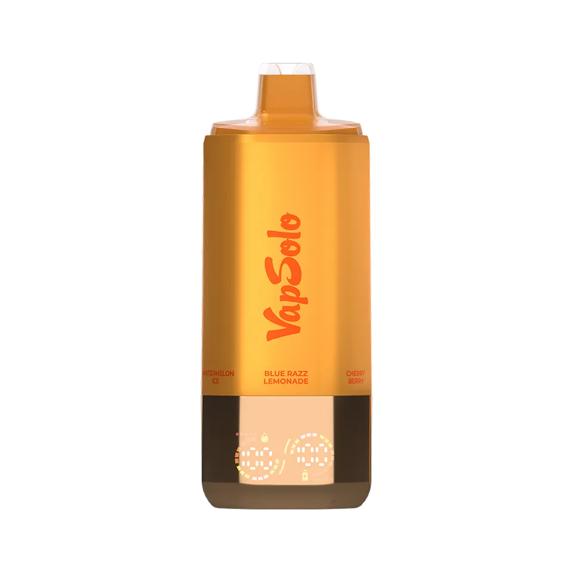
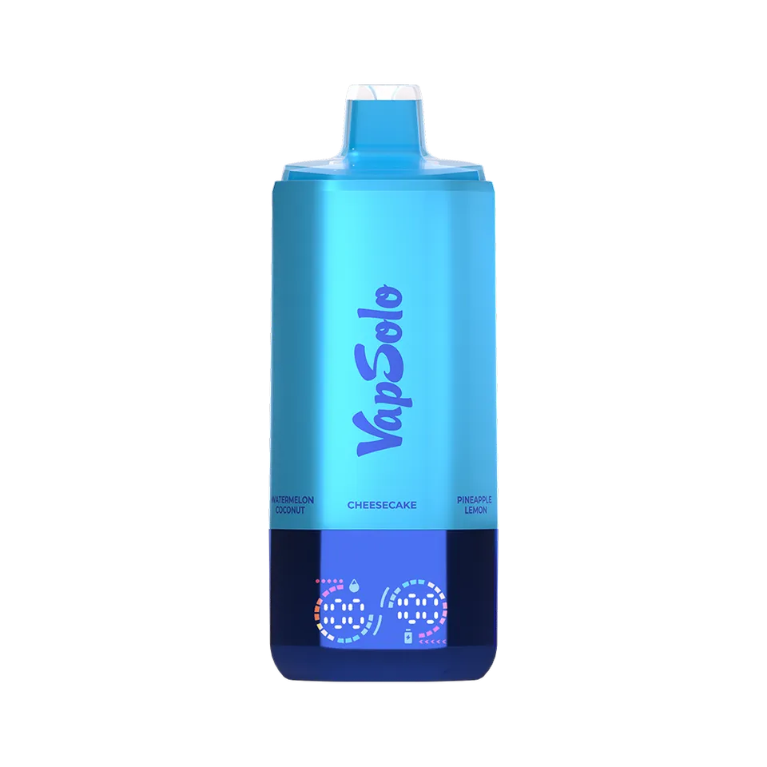
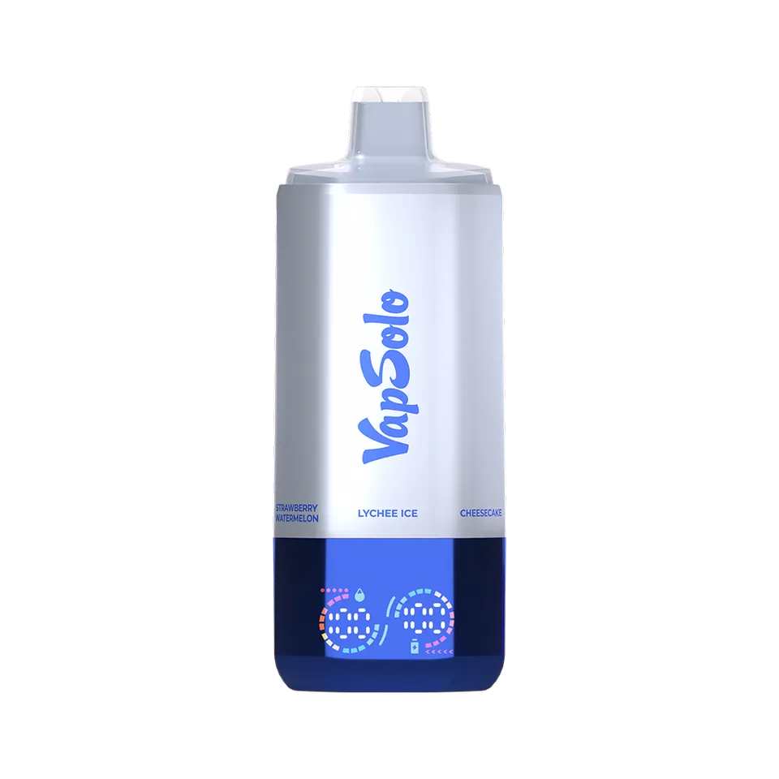
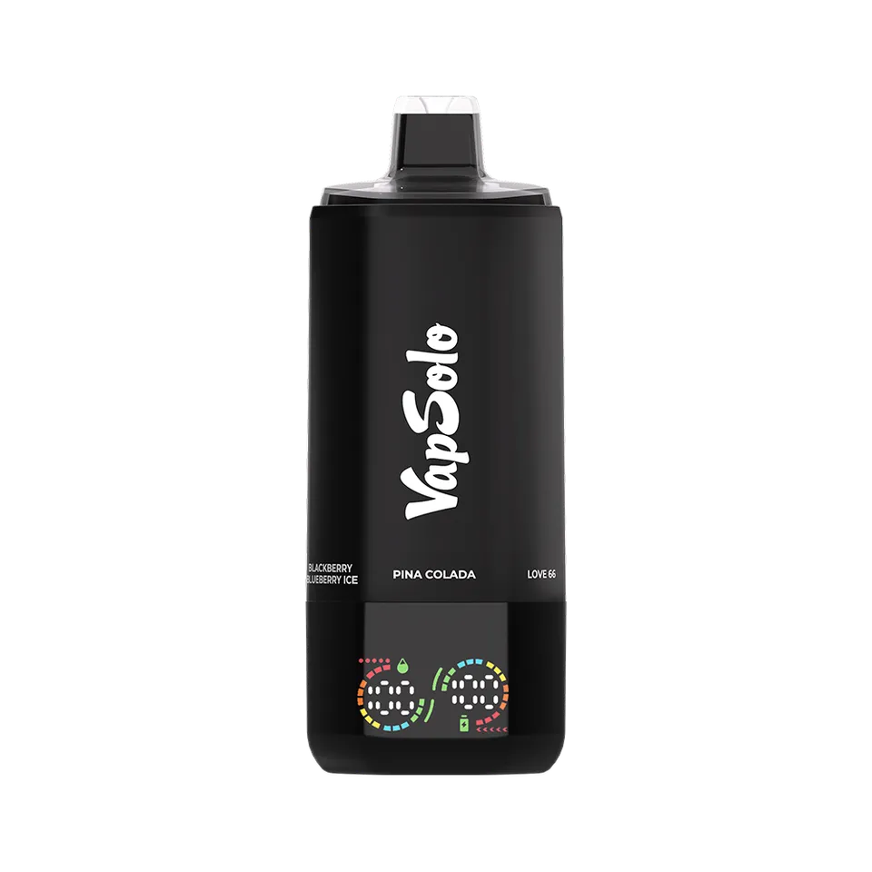
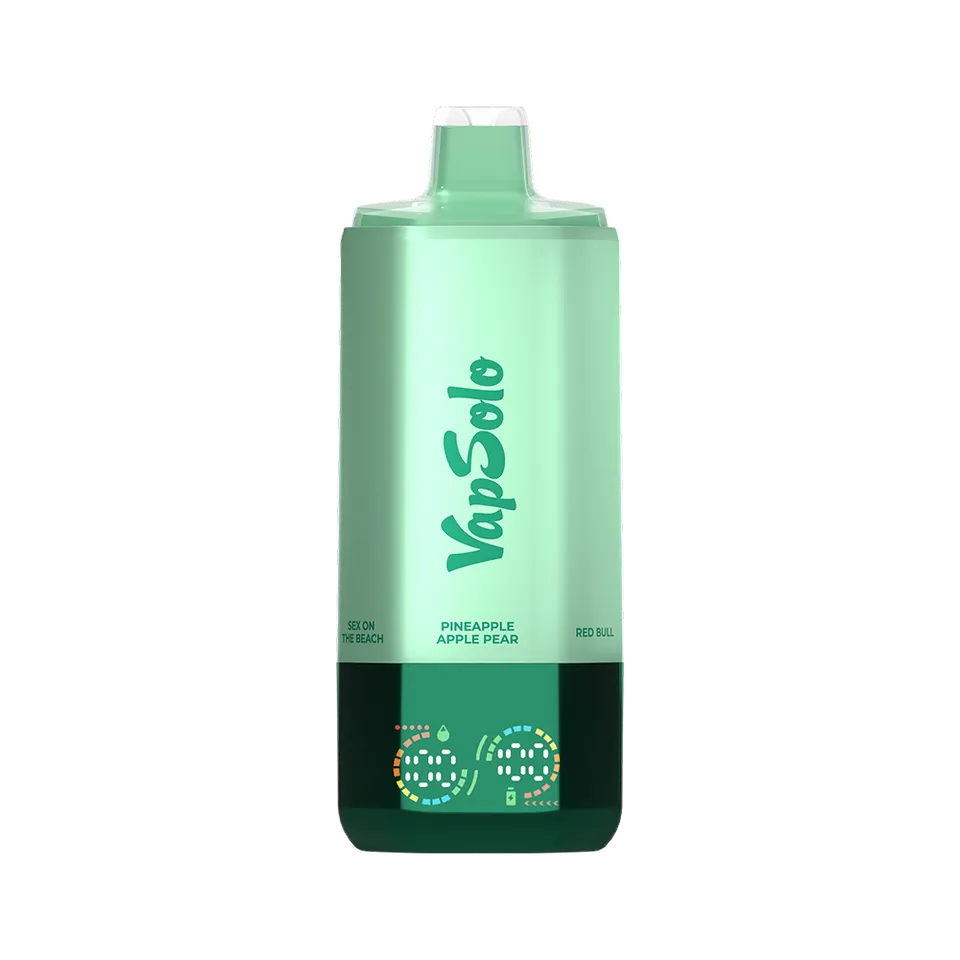
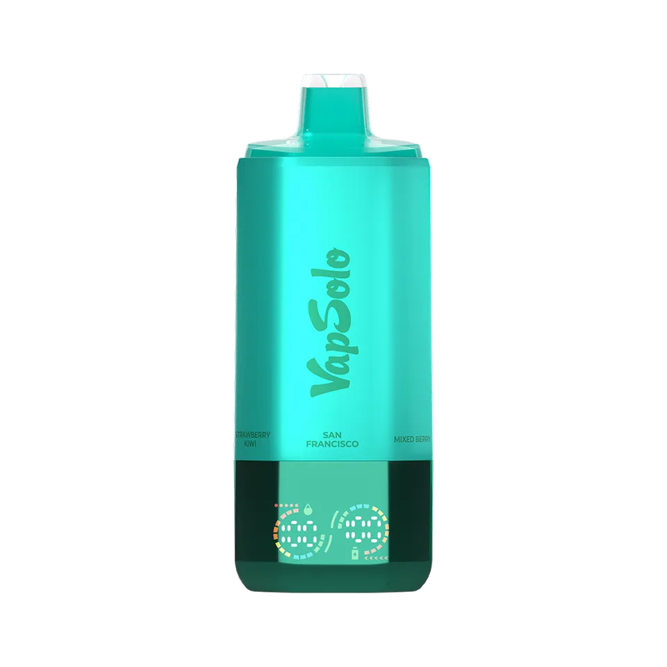
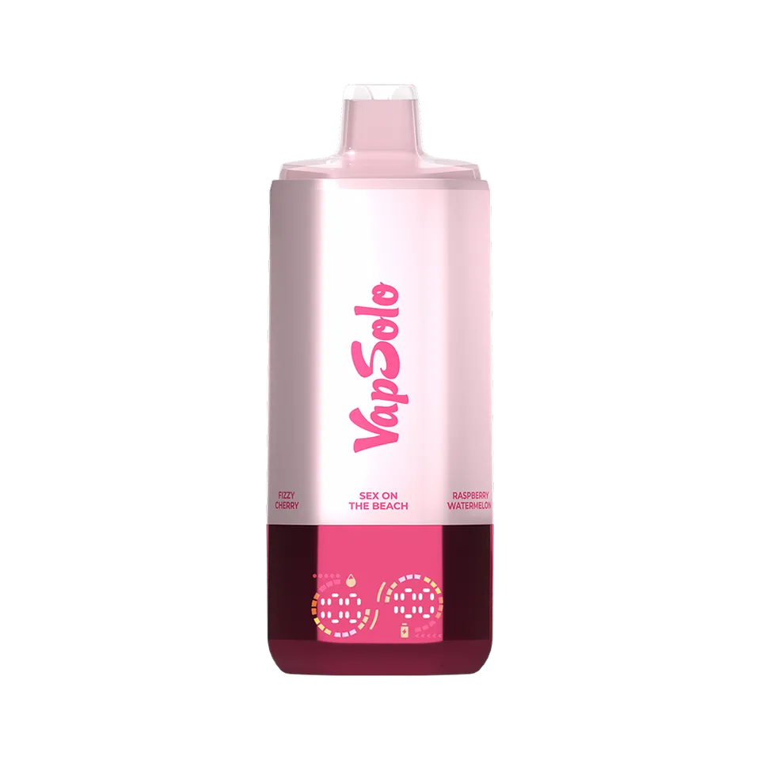
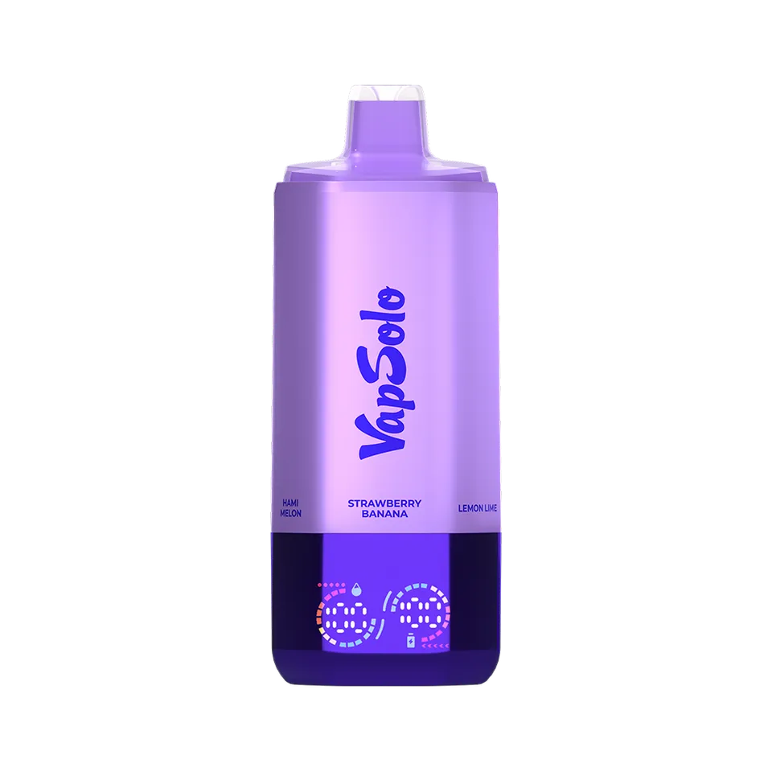
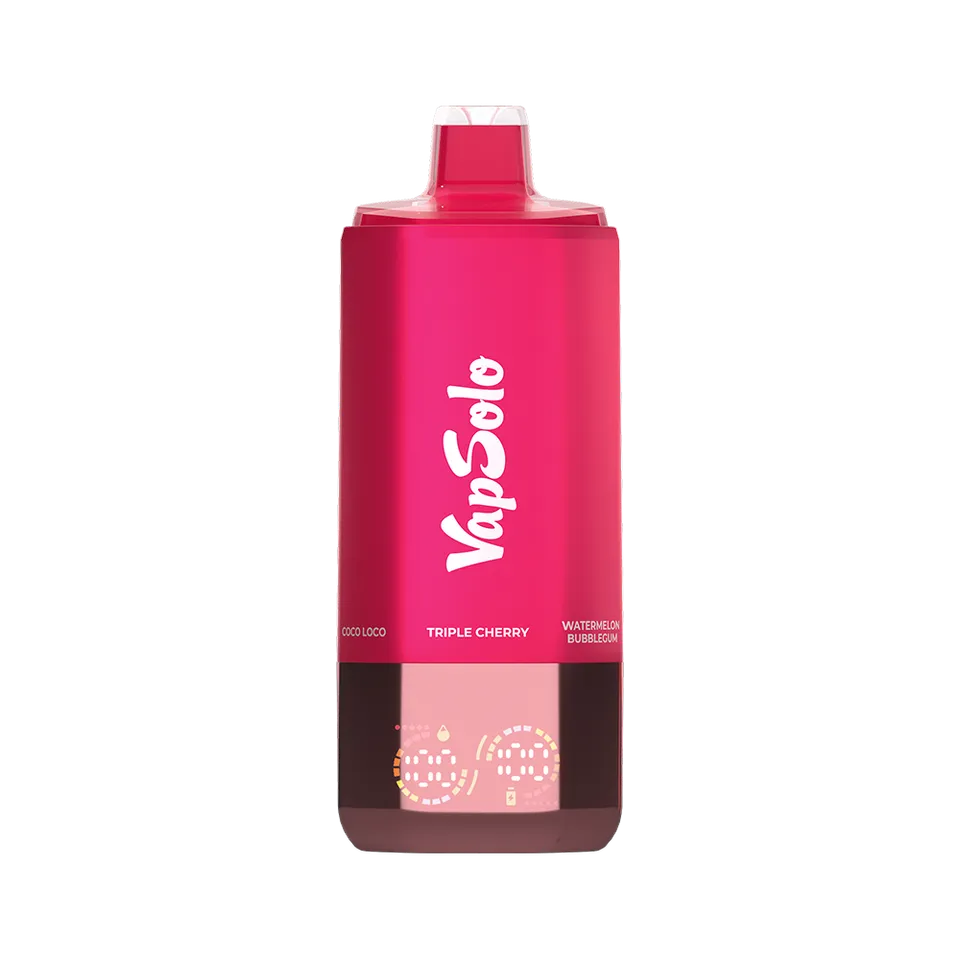
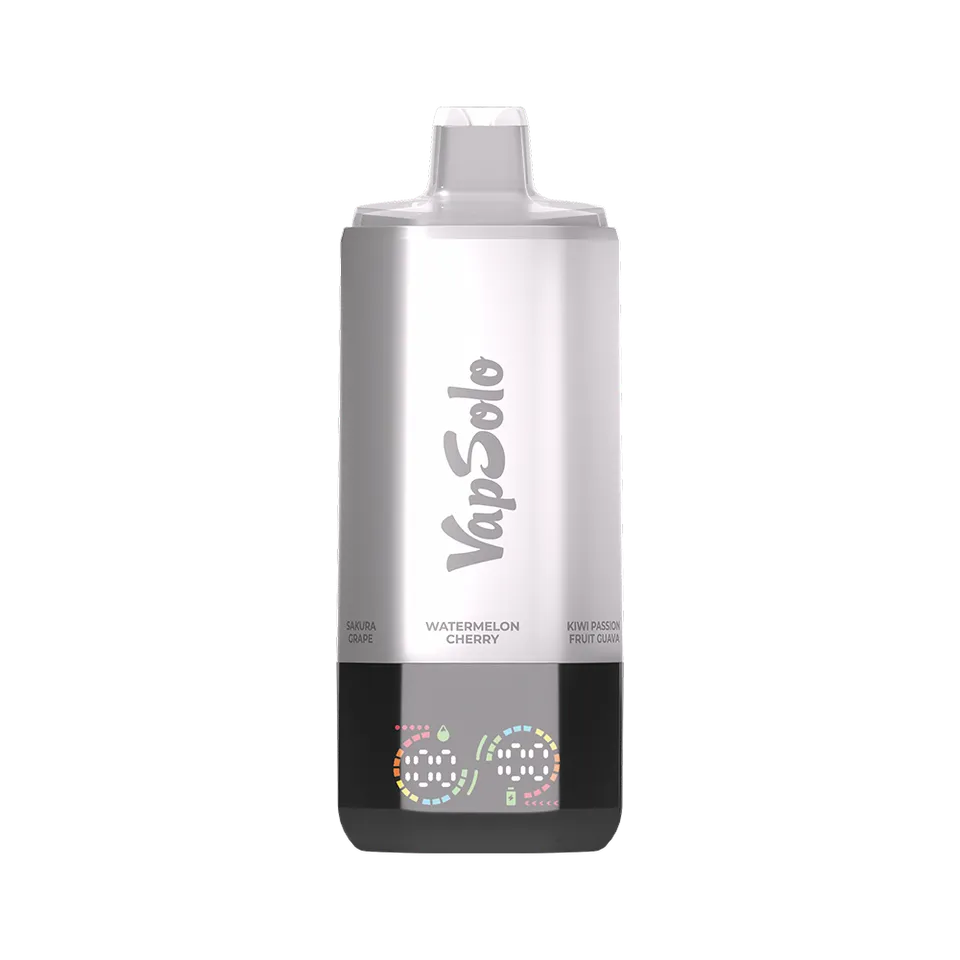

Depósitos separados
El sistema reúne seis depósitos independientes. Cada posición corresponde a una receta ya preparada, para alternar entre perfiles sin llevar varios vapers desechables.
VAPSOLO® / SIXER 180K
Un vaper desechable 6 en 1 pensado para adultos que prefieren alternar sabores de vaper sin cambiar de dispositivo.
COMPRAR AHORALa compra se abre en un sitio externo gestionado por el mismo operador.
ORANGE / 01

01 Seis depósitos. Seis perfiles.
LA IDEA SIXER
El sistema reúne seis depósitos independientes. Cada posición corresponde a una receta ya preparada, para alternar entre perfiles sin llevar varios vapers desechables.
La pantalla muestra el estado de batería y el nivel de e-líquido del depósito activo.
Una resistencia mesh de 1,0 Ω para cada depósito, según la información del fabricante.
FORMATO 6 EN 1
Gira para cambiar.
Hazlo a tu ritmo.
La selección de sabor depende de la combinación elegida. Consulta siempre el etiquetado del dispositivo que recibas.
LA COLECCIÓN
Los acabados cambian con cada selección. Estas son las fotografías reales de los diez dispositivos documentados en esta página.









Consulta la combinación disponible antes de comprar.
EN DETALLE
Una referencia clara de la configuración anunciada para VapSolo® SIXER 180K. El contenido de nicotina indicado para esta versión es 2 %; revisa siempre el etiquetado y la normativa aplicable.
SELECCIONES REALES
Las combinaciones que aparecen en los dispositivos fotografiados incluyen perfiles frutales, frescos, tropicales y dulces. Entre ellas se encuentran Love 66, Strawberry Watermelon y Watermelon Ice.
IMPORTANTE
La duración real no está garantizada: cambia según la forma de uso, la duración de cada calada, la batería, la temperatura y otros factores. No interpretes esta cifra como un plazo de funcionamiento asegurado.
RESPUESTAS CLARAS
En SIXER, el formato 6 en 1 reúne seis depósitos de sabor independientes dentro del mismo dispositivo. La combinación concreta se identifica en el propio dispositivo y en su etiquetado.
Las fotografías de esta página muestran combinaciones ya configuradas. La selección se realiza por combinación publicada para el producto, no necesariamente por sabores individuales.
La información publicada para el producto indica una lectura LED para el nivel de batería y el e-líquido del depósito activo.
No. Es una estimación anunciada y no una garantía de duración. El uso real puede producir un resultado diferente.
COMPRA CON INFORMACIÓN
La selección, el precio y la disponibilidad se confirman en la página externa antes de finalizar la compra. Solo para personas adultas.
COMPRAR AHORADESCUENTO POR VOLUMEN
| 3–5 unidades | −10 % |
|---|---|
| 6–9 unidades | −15 % |
| 10–49 unidades | −20 % |
| 50 o más | −50 % |
ACCESO RESTRINGIDO
18+
Este contenido está destinado exclusivamente a personas adultas.